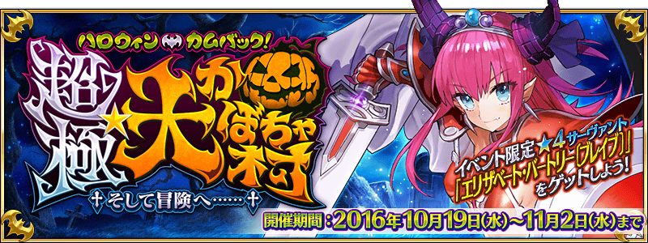

◆活動舉辦期間◆
2016年10月19日(三) 16:00～11月2日(三) 21:59
◆活動概要◆
舉辦期間限定活動｢萬聖節・歸來！ 超極☆大南瓜村 ～接著邁向冒險……～｣！
與勇者伊麗莎白一起到南瓜村冒險的Master。
好不容易到達城內，在前方等待的是……？
本活動的主線關卡為逐日開放。
使用推進道具的話能有利推進關卡。
推進關卡｢★4(SR)伊莉莎白・巴托里〔Brave〕｣吧！
◆活動参加條件◆
只有通過「第一特異點 邪龍百年戰爭 奧爾良」的Master才能參加
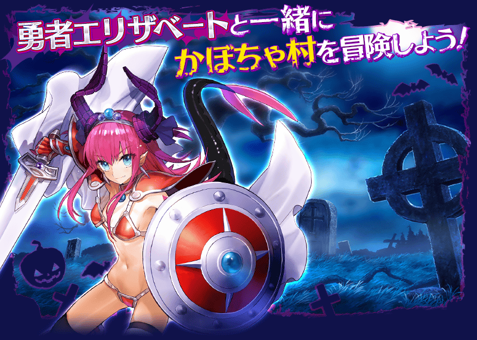
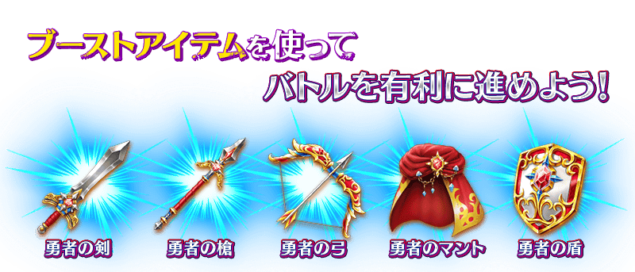
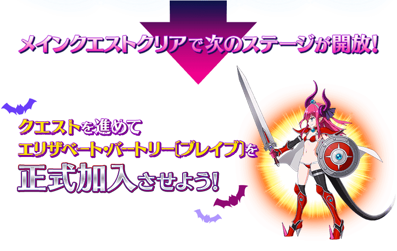
享受的故事的主線關卡將逐日開放。
通過主線關卡後會開放新階段！
在各階段準備了能反覆通過來獲得活動道具的Free關卡。
| 時間表 | |
|---|---|
| 主線關卡 第一天 |
10月19日(三) 16:00～ 11月2日(三) 21:59 |
| 主線關卡 第二天 |
10月19日(三) 23:00～ 11月2日(三) 21:59 |
| 主線關卡 第三天 |
10月20日(四) 23:00～ 11月2日(三) 21:59 |
| 主線關卡 第四天 |
10月21日(五) 23:00～ 11月2日(三) 21:59 |
| 主線關卡 第五天 |
10月22日(六) 23:00～ 11月2日(三) 21:59 |
通過最後的主線關卡的話，將開放挑戰關卡。
挑戰關卡，是男性Servant限定等，限制Servant編成的高難易度關卡。
通過的話除了能提升伊莉莎白・巴托里〔Brave〕的寶具等級外，還能獲得伝承結晶。
※開發中畫面。
◆超值攻略方法・其1◆
使用能靠活動道具交換和關卡報酬等獲得的推進道具的話，會給予對戰鬥有利的效果。
使用｢勇者の剣｣｢勇者の槍｣｢勇者の弓｣的話，我方全體(含候補)「Buster」「Quick」「Arts」各自的指令卡性能提升。
使用｢勇者のマント｣的話，我方全體(含候補)的寶具威力提升。
使用｢勇者の盾｣的話，給予我方全體(含候補)無敵狀態(3次)。
※請注意無敵的效果無法重複。如果使用｢勇者の盾｣時裝備有無敵效果的概念禮裝，概念禮裝的效果為優先而不給予｢勇者の盾｣的效果。
利用推進道具的效果，有利地推進戰鬥吧！
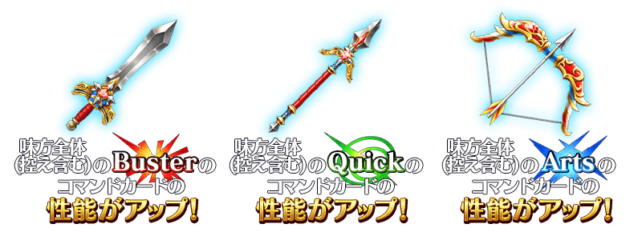
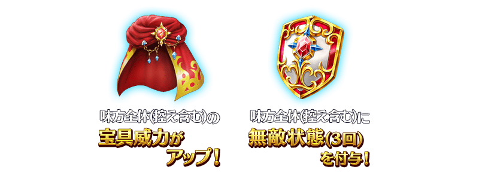
推進道具在關卡開始前，任意選擇1種類消費。
※推進道具的效果對我方全體＜含候補＞有效，持續到戰鬥結束前。
◆超值攻略方法・其2◆
勇者伊麗莎白和她的夥伴們在「萬聖節・歸來！ 超極☆大南瓜村 ～接著邁向冒險……～」的攻擊威力提升。
勇者的隊伍是包含「Archer」「Caster」「Berserker」四人的穩定平衡。
哪位Servant會成為夥伴敬請期待故事劇情。
另外，關於與這次的故事關係深切的克麗奧佩脫拉及弗拉德三世〔EXTRA〕也在「萬聖節・歸來！ 超極☆大南瓜村 ～接著邁向冒險……～」的攻擊威力提升。
※各Servant的增加量不同。
◆超值攻略方法・其3◆
裝備能在活動道具交換入手的活動限定概念禮裝｢勇者エリちゃんの冒険｣｢ウィザード＆プリースト｣｢マタ･ハリの酒場｣的話，會落活動専用道具掉的敵人追加出現率提升。
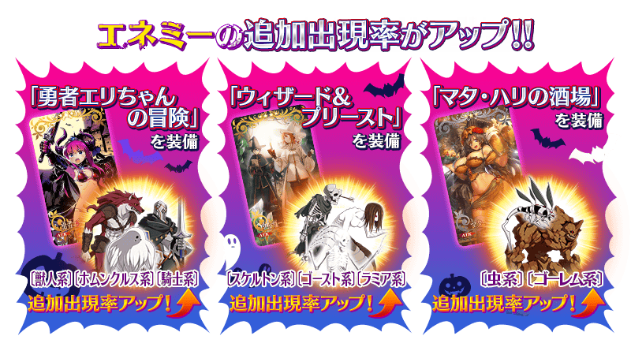
◆超值攻略方法・其4◆
裝備期間限定概念禮裝的話，活動専用道具｢金のズダ袋｣｢銀のズダ袋｣｢銅のズダ袋｣各自的獲得數提升。
※請注意在各關卡的道具掉落率並非100%。
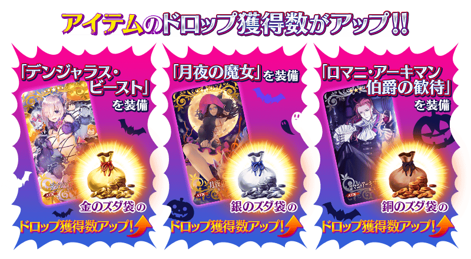
 |
★★★★★SSR |
| 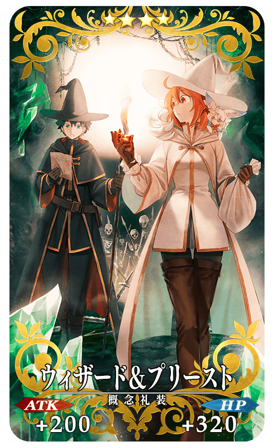 |
★★★★SR |
| 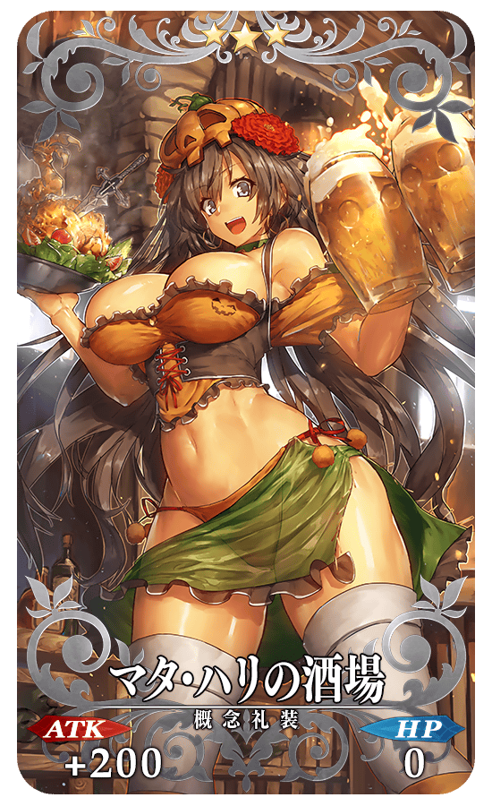 |
★★★R |
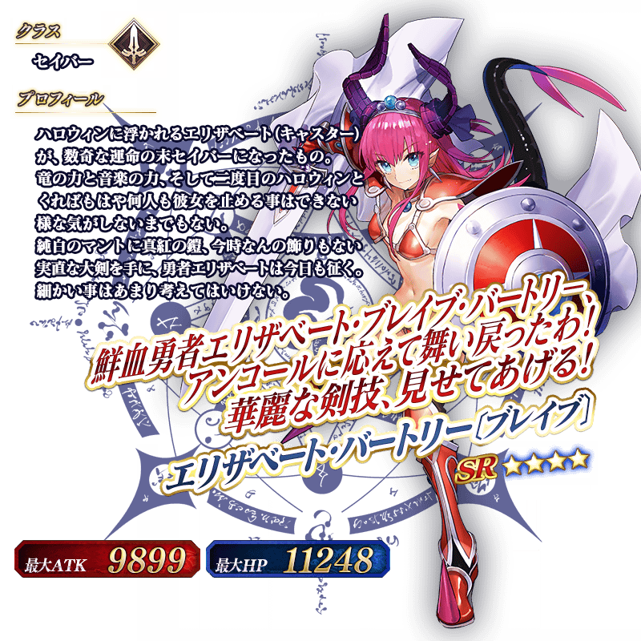
◆靈基再臨◆
使用除了在活動道具交換外無法入手的「龍之寶玉(竜のオーブ)」，重複4次靈基再臨的話，卡面會有所變化！
※伊莉莎白・巴托里〔Brave〕不會隨靈基再臨使戰鬥角色的外觀變化。
◆交換方法◆
交換期間：2016年10月19日(三) 16:00～11月9日(三) 13:59
※交換期間結束後｢金のズダ袋｣｢銀のズダ袋｣｢銅のズダ袋｣｢勇者の剣｣｢勇者の槍｣｢勇者の弓｣｢勇者のマント｣｢勇者の盾｣會消失。
從達文西工房内的「活動道具交換」，用收集來的活動專用道具來交換以下的道具。
◆能用金のズダ袋交換的道具◆
|
【活動限定概念禮裝】 【活動限定靈基再臨素材】 【技能強化素材】 【技能強化＆靈基再臨素材】 【其他道具】 |
◆能用銀のズダ袋交換的道具◆
|
【活動限定概念禮裝】 【活動限定靈基再臨素材】 【技能強化＆靈基再臨素材】 【其他道具】 |
◆能用銅のズダ袋交換的道具◆
|
【活動限定概念禮裝】 【活動限定靈基再臨素材】 【技能強化＆靈基再臨素材】 【其他道具】 |
◆能用勇者の剣・勇者の槍・勇者の弓・勇者のマント・勇者の盾交換的道具◆
※自11月2日(三) 23:00開放
| 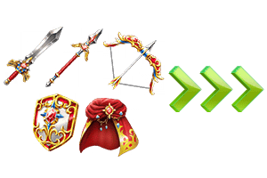 |
【其他道具】 |
◆「萬聖節2016Pick Up召喚」期間◆
期間：2016年10月19日(三) 16:00～11月2日(三) 21:59
以期間限定舉辦｢萬聖節2016Pick Up召喚｣！
初登場的Servant｢ ★5(SSR)克麗奧佩脫拉｣以期間限定登場！
另外｢★4(SR)弗拉德三世〔EXTRA〕｣新登場！
詳情請在聖晶石召喚畫面左下的召喚詳細確認。
※克麗奧佩脫拉在Pick Up召喚期間結束後，不會追加到故事召喚。
裝備期間限定概念禮裝｢★5(SSR)デンジャラス・ビースト｣｢★4(SR)月夜の魔女｣｢★3(R)ロマニ・アーキマン伯爵の歓待｣的話活動専用道具的掉落獲得數提升。。
※｢★3(R)ロマニ・アーキマン伯爵の歓待｣在Pick Up期間中，也能在友情點數召喚獲得。
PickUp期間中，期間限定Servant、新登場Servant、期間限定概念禮裝的出現機率提升！
10次召喚中★4(SR)以上1張確定和★3(R)以上的Servant1位確定！
※★4(SR)以上確定包含Servant和概念禮裝。
※所謂「出現機率UP」意指比同稀有度的Servant及概念禮裝出現機率更高的設定。
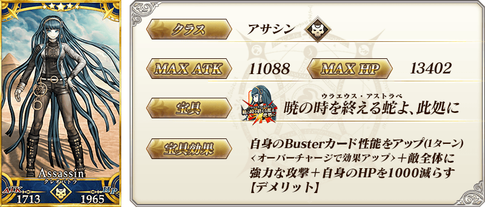
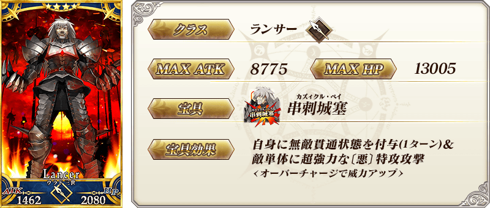
| 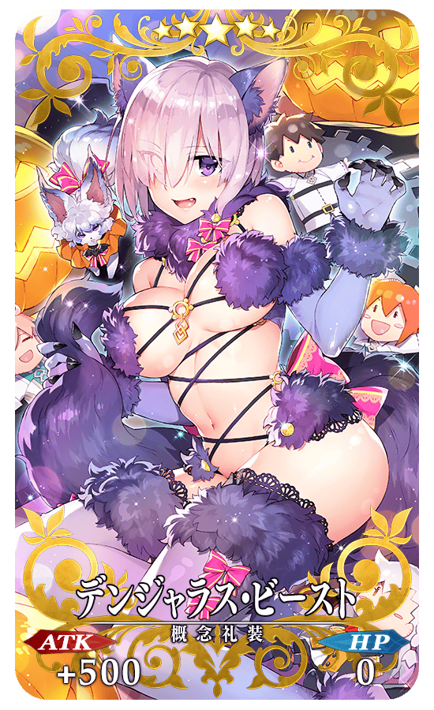 |
★★★★★SSR |
| 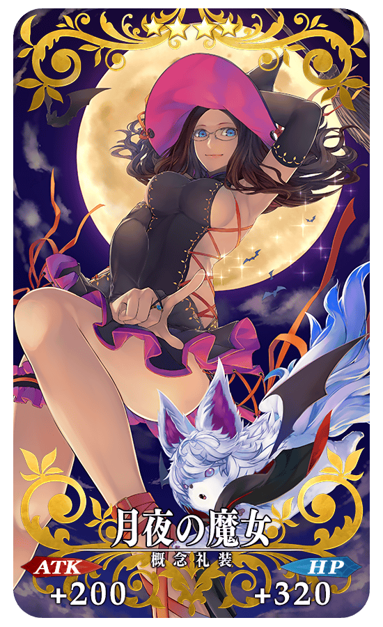 |
★★★★SR |
| 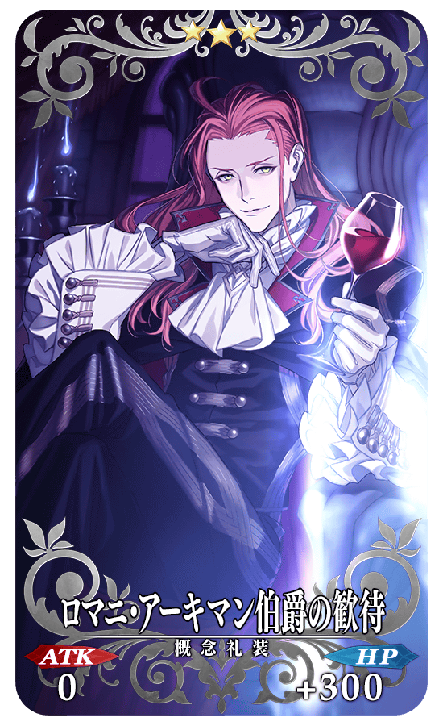 |
★★★R |
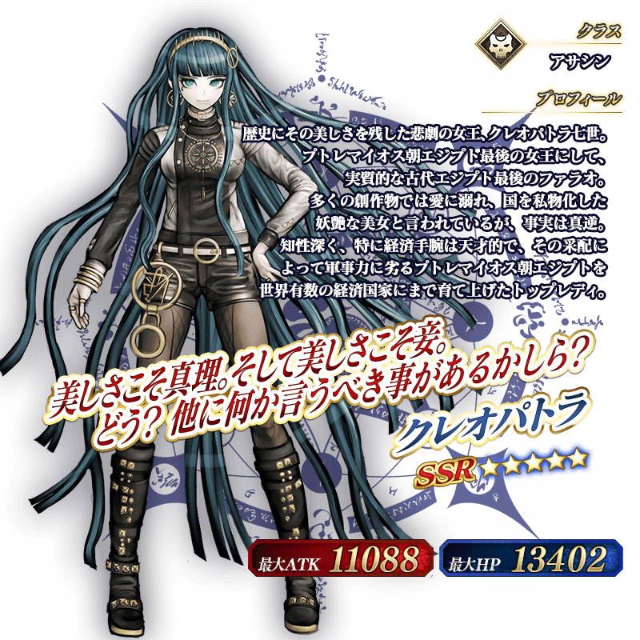